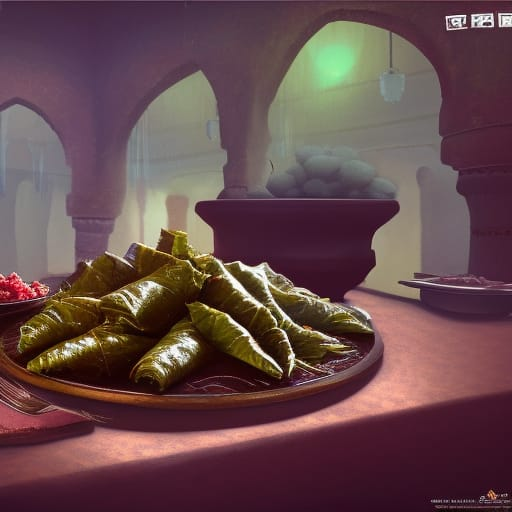

Egyptian Mahshi

A plate of Egyptian mahshi on a dinner table. Source: NightCafe
Stuffed grapevine leaves, also known as mahshi, is a popular Egyptian dish that showcases the rich and flavorful culinary traditions of the region. The dish is made by carefully stuffing grapevine leaves with a tantalizing mixture of rice, herbs, spices, and often minced meat. The delicate grape leaves provide a tender and slightly tangy casing that perfectly complements the savory filling. Mahshi is typically served as an appetizer or part of a mezze platter, and it is enjoyed both during everyday meals and on special occasions. The combination of aromatic flavors and the visually appealing presentation make mahshi a true delight for the senses, embodying the essence of Egyptian cuisine.
Preparing mahshi is a labor of love, as it requires patience and skill to ensure each grape leaf is filled and rolled with precision. The filling is a harmonious blend of ingredients such as rice, ground meat (often lamb or beef), onions, garlic, fresh herbs like parsley and dill, and a medley of spices including cumin, cinnamon, and allspice. The grape leaves are carefully wrapped around the filling, creating neat little parcels that are then gently simmered in a flavorful broth. The cooking process infuses the leaves with a delectable taste, softening their texture and allowing the flavors to meld together. The result is a dish that is tender, fragrant, and bursting with a delightful combination of savory and herbal notes. Mahshi is a beloved dish that captures the essence of Egyptian cuisine and invites diners to savor each flavorful bite.
Ingredients
- 1 jar of grapevine leaves (around 30-40 leaves)
- 1 cup of short-grain rice
- 1 large onion, finely chopped
- 3 cloves of garlic, minced
- 1/4 cup of fresh parsley, chopped
- 1/4 cup of fresh dill, chopped
- 2 tablespoons of olive oil
- 1 teaspoon of ground cumin
- 1/2 teaspoon of ground cinnamon
- 1/2 teaspoon of ground allspice
- Juice of 1 lemon
- Salt and pepper to taste
- Water or vegetable broth for cooking
Steps
- Rinse the grapevine leaves in cold water to remove any brine or saltiness. Trim off any excess stems if needed.
- In a large mixing bowl, combine the rice, chopped onion, minced garlic, parsley, dill, olive oil, cumin, cinnamon, allspice, lemon juice, salt, and pepper. Mix well to evenly combine all the ingredients.
- Place a grapevine leaf flat on a clean surface, vein side up. Spoon about a tablespoon of the rice mixture onto the center of the leaf, near the stem end.
- Fold the bottom of the leaf over the filling, then fold in the sides, and roll it up tightly to form a neat cylinder. Repeat this process with the remaining grapevine leaves and rice mixture.
- Place the stuffed grapevine leaves in a large pot, packing them tightly together to prevent them from unraveling during cooking.
- Pour enough water or vegetable broth into the pot to cover the grapevine leaves. Place a heatproof plate or a few grapevine leaves on top of the stuffed leaves to hold them in place.
- Bring the liquid to a gentle simmer, then reduce the heat to low, cover the pot, and let the mahshi cook for about 45 minutes to 1 hour, or until the rice is fully cooked and tender.
- Once cooked, remove the pot from the heat and let the mahshi cool slightly before serving.
Back to homepage